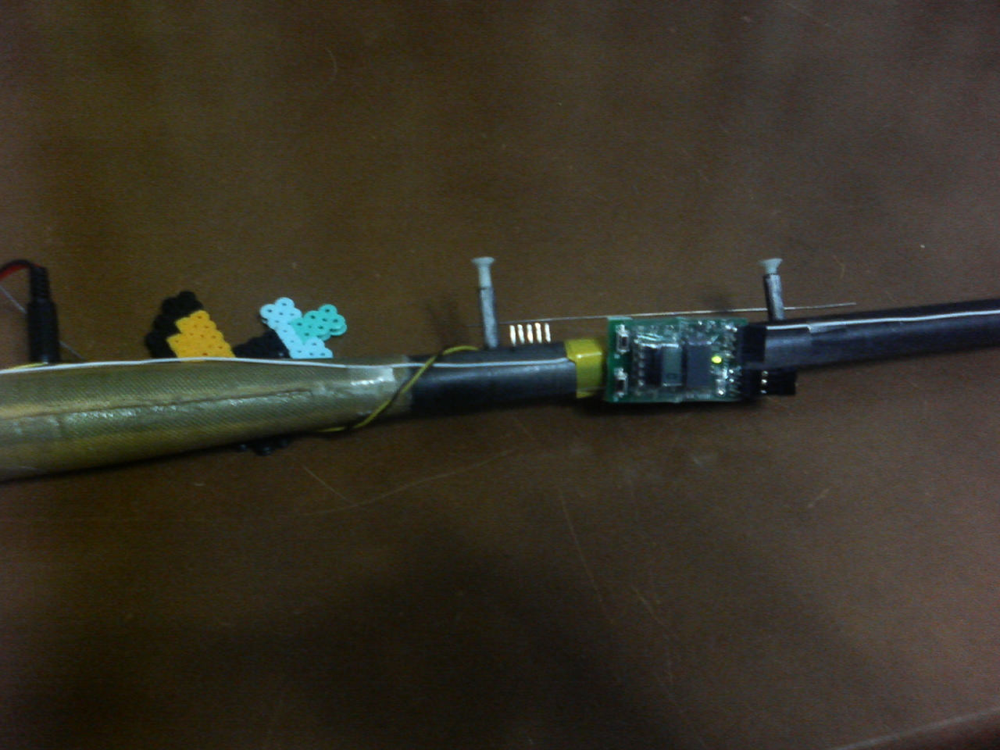

Hexpert Systemから出ているデータロガーです。
日本で手に入るものとしてはLoloが有名ですが、家に帰らないとデータの確認ができないのでは購入意欲が沸きませんでした。
そんなおりRC groupsでzlogについての投稿があって、どんなものなのか調べてみたら、世の中にはいいものがあるじゃない！
なんと言っても、本体にディスプレーがついている。
そうです。ランチの後に、今どれくらい揚がったかがすぐに分かるんです。
こんなのが欲しかったのよ。ということで、購入。
RC groupsでのスレは空撮のフォーラムにあることも表しているように、作った人は、撮影時の高度の記録を取るために作ったのだそうで、
他のロガーに比べてシンプルであることが大きな特徴です。
ディスプレイを見るためにはポッドの中に入れてしまってはだめなので、外にくっつけることになリます。大きな機体に積んで
普通のロガーのように中に入れるのが普通でしょうし、そうすればぶつけて壊してしまうこともないでしょうが、ぱっと見ることができなくては
だめなので、やっぱり外。それに、ずーっと付けておくつもりはないし、ポッドにバランス用の重りは入っていないから、重心があわない。

こんな風に、ブームの重心直下にセロテープで貼り付けてます。電源は、ポッドから引いてきています。
ランチ高度を確認するのはこんな手順。
他のロガーのソフトを使ったことがないのですが、なんか使いにくい。